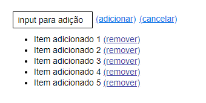
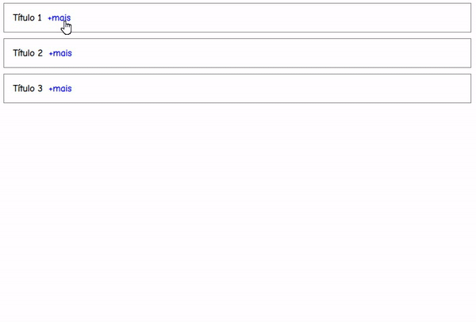

Universidade Regional de Blumenau
Disciplina: Programação Web I
Professor: Jonathan Manoel Borges
Universidade Regional de Blumenau
Disciplina: Programação Web I
Professor: Jonathan Manoel Borges
A seguir, são apresentadas algumas questões.
Todos as questões devem ser desenvolvidas utilizando a biblioteca jQuery.
ReferênciasAdicione o jQuery a esta página (utilize referência para um link CDN - Content Delivery Network)
Parágrafo 01
Parágrafo 02
Parágrafo 03
Parágrafo 04
Parágrafo 05
Parágrafo 06
Parágrafo 07
Parágrafo 08
Utilizando HTML e jQuery cria a lista dinâmica ilustrada a seguir:
Onde:
Utilizando HTML, CSS e jQuery, cria a funcionalidade de expandir/recolher ilustrada a seguir:
